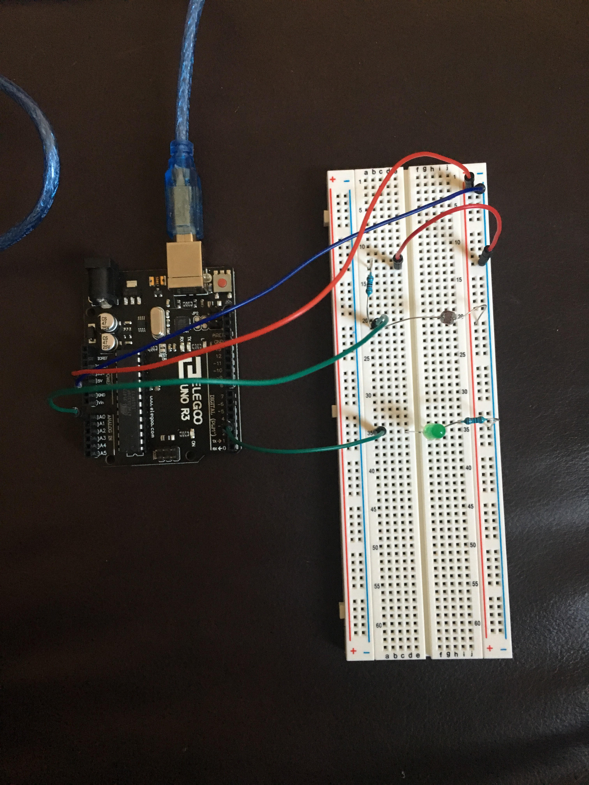

Espen Scheuers's Assignment 3!
Here is a video of assignment 3.

Here is a photo of assignment 3.

The led is rated for about 20 milli amps A (=0.02A) and the arduino has 5 volts
Using Ohms law: R = V / I = 5 / 0.02 = 250) so I choose one close to that but higher 1000
For the photoresistor, it needs to provide a resistance to measure against
so I used 10k .

Here is the code and serial output for assignment 3:
This code prints out the value output to the LED and the value recieved
by the photo resistor and "lighter" or "darker" depending on if the
amount of light is increasing or decreasing like this:
117lighter 491
122lighter 511
127lighter 522
130lighter 527
131lighter 527
131lighter 531
132lighter 534
133lighter 540
134lighter 543
135lighter 546
136lighter 550
137darker 549
136lighter 556
138lighter 559
int lightPin = 0; //set up the pin for the sensor
int ledPin=3; //set up the pin for the LED
int lightReading = 0;
void setup()
{
Serial.begin(9600); //Begin serial communcation
pinMode(ledPin, OUTPUT );
lightReading = analogRead(lightPin);
}
void loop()
{
// This if statement checks if the amount of light is changing and prints what it's doing if it is
if(analogRead(lightPin) > lightReading) {
Serial.print("lighter ");
} else {
Serial.print("darker ");
}
lightReading = analogRead(lightPin); // Reads the amount of light to compare the next loop through
Serial.println(lightReading); //Write the value of the photoresistor to the serial monitor.
int LEDbrightness = map(lightReading, 0, 1023, 0, 255);
Serial.print(LEDbrightness);
analogWrite(ledPin, LEDbrightness); //Writes to the LED
delay(10); //delay to make the changes for noticable
}